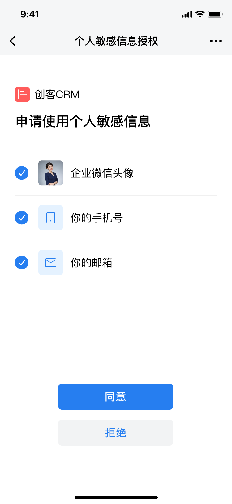

目录
企业微信提供了OAuth的授权登录方式，可以让从企业微信终端打开的网页获取成员的身份信息，从而免去登录的环节。
企业应用中的URL链接（包括自定义菜单或者消息中的链接），均可通过OAuth2.0验证接口来获取成员的UserId身份信息。
OAuth2简介
OAuth2的设计背景，在于允许用户在不告知第三方自己的账号密码情况下，通过授权方式，让第三方服务可以获取自己的资源信息。
详细的协议介绍，开发者可以参考RFC 6749。

流程图中，包含四个角色。
- ResourceOwner为资源所有者，即为用户
- User-Agent为浏览器
- AuthorizationServer为认证服务器，可以理解为用户资源托管方，比如企业微信服务端
- Client为第三方服务
调用流程为：
A) 用户访问第三方服务，第三方服务通过构造OAuth2链接（参数包括当前第三方服务的身份ID，以及重定向URI），将用户引导到认证服务器的授权页
B) 用户选择是否同意授权
C) 若用户同意授权，则认证服务器将用户重定向到第一步指定的重定向URI，同时附上一个授权码。
D) 第三方服务收到授权码，带上授权码来源的重定向URI，向认证服务器申请凭证。
E) 认证服务器检查授权码和重定向URI的有效性，通过后颁发AccessToken（调用凭证）
D)与E)的调用为后台调用，不通过浏览器进行
企业微信OAuth2接入流程
 图1 企业微信OAuth2流程图
图1 企业微信OAuth2流程图使用OAuth2前须知
关于网页授权的可信域名
REDIRECT_URL中的域名，需要先配置至应用的“可信域名”，否则跳转时会提示“redirect_uri参数错误”。
要求配置的可信域名，必须与访问链接的域名完全一致；若访问链接URL带了端口号，端口号也需要登记到可信域名中。举个例子：
- 假定重定向访问的链接是：https://mail.qq.com:8080/cgi-bin/helloworld：
| 配置域名 | 是否正确 | 原因 |
|---|---|---|
| mail.qq.com:8080 |  | 配置域名与访问域名完全一致 |
| email.qq.com | 配置域名必须与访问域名完全一致 | |
| support.mail.qq.com | 配置域名必须与访问域名完全一致 | |
| *.qq.com | 不支持泛域名设置 | |
| mail.qq.com | 配置域名必须与访问域名完全一致，包括端口号 |
- 假定配置的可信域名是 mail.qq.com：
| 访问链接 | 是否正确 | 原因 |
|---|---|---|
| https://mail.qq.com/cgi-bin/helloworld | | 配置域名与访问域名完全一致 |
| https://mail.qq.com/cgi-bin/redirect | | 配置域名与访问域名完全一致，与协议头/链接路径无关 |
| https://exmail.qq.com/cgi-bin/helloworld | 配置域名必须与访问域名完全一致 |
关于UserID机制
UserId用于在一个企业内唯一标识一个用户，通过网页授权接口可以获取到当前用户的UserId信息，如果需要获取用户的更多信息可以调用 通讯录管理 - 成员接口 来获取。
静默授权与手动授权
- 静默授权：用户点击链接后，页面直接302跳转至 redirect_uri?code=CODE&state=STATE
- 手动授权：用户点击链接后，会弹出一个中间页，让用户选择是否授权，用户确认授权后再302跳转至 redirect_uri?code=CODE&state=STATE

个人敏感信息授权管理
用户首次进入oauth2页面进行手动授权后，30天内再次进入应用页面不会再弹出授权页，默认授权用户当前授权的敏感信息。若30天内用户需要修改个人敏感信息授权，可进入应用详情页的“个人敏感信息授权管理”页面，重新更改个人敏感信息授权。
目前仅2022.6.20 20:00后新创建的的自建应用以及代开发应用或者所有的第三方应用，且用户曾经通过进入oauth2页面进行手动授权过才会出现该入口。
缓存方案建议
通过OAuth2.0验证接口获取成员身份会有一定的时间开销。对于频繁获取成员身份的场景，建议采用如下方案：
1、企业应用中的URL链接直接填写企业自己的页面地址
2、成员操作跳转到步骤1的企业页面时，企业后台校验是否有标识成员身份的cookie信息，此cookie由企业生成
3、如果没有匹配的cookie，则重定向到OAuth验证链接，获取成员的身份信息后，由企业后台植入标识成员身份的cookie信息
4、根据cookie获取成员身份后，再进入相应的页面